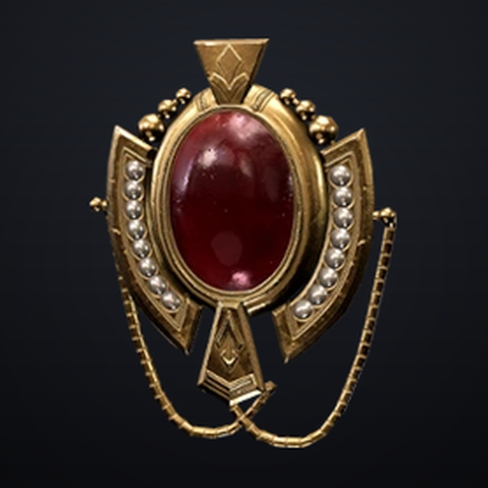

1. Qu'est-ce qu'une plaque d'identité ?
Les dog tags (plaques d'identité) sont de petits objets récupérés sur les corps des Operators abattus. Ils occupent un slot minuscule, pèsent 0,11 kg, et portent trois informations : qui vous a tué, avec quelle arme, et — en jeu — une valeur qui dépend du rang du joueur.
Elles ne sont pas que décoratives
Les plaques servent à : 1) payer certaines extractions (extraction Hel sur Valley), 2) remplir l'étagère de plaques (Dog Tag Shelf) de votre Trophy Room, 3) alimenter le Dog Tag Gachapon en mode Supplies Drops, 4) remplir des objectifs de mission, 5) être revendues.
2. Combien valent-elles ?
| Contexte | Valeur | Commentaire |
|---|---|---|
| Rookie (rang le plus bas) | ≈ 500 Koen | La valeur de base, +100 environ par rang |
| Mode standard (Normal / Lockdown) | ≈ 5 000 Koen | La valeur historique des plaques « Battleforged » |
| Forbidden & Warlord Tournament | 70 000 Koen | Multiplicateur ×14 depuis l'introduction du mode Warlord |
Le changement de juillet 2026
Les plaques ne valent plus la même chose selon le mode : 5 000 Koen en modes classiques, 70 000 Koen en Forbidden et au Warlord Tournament. C'est une volonté assumée de récompenser le PvP à haut risque — mais cela rend les modes Forbidden très rentables pour qui sait les exploiter. La critique de la communauté : le barème n'est pas progressif (Normal bas, Lockdown moyen, Forbidden élevé), ce qui disadvantage les joueurs qui ne jouent qu'en modes accessibles.
Attention aux bots
Les playerbots des faibles niveaux portent aussi des plaques. Pour distinguer un vrai joueur : un niveau 30, un rang ace / hero / legend est toujours un humain, et les bots utilisent presque toujours des kits d'entrée de gamme.
3. À quoi elles servent vraiment
| Usage | Détail |
|---|---|
| Extraction Hel (Valley) | Some extraction points require turning in a certain number of dog tags |
| Dog Tag Shelf | Étagère dédiée dans la Trophy Room ; les plaques y sont exposées et peuvent être « améliorées » en niveau à force de collection |
| 500 plaques | La communauté rapporte qu'en sortir 500 en raid ou en secure ops débloque 3 boîtes de plaques devant le mur de l'étagère |
| Gachapon | Monnaie d'échange du mode Supplies Drops pour un système de tirages à récompense |
| Missions | Certaines tâches hebdomadaires demandent des plaques |
| Vente | 500 Koen pièce en mode standard, jusqu'à 70 000 K en Forbidden |
4. Les nouveautés Saison 7
La S7 ne change pas la valeur des plaques, mais elle change la façon de les manipuler :
- Inspection : quand vous portez une plaque (rig de poitrine, poche, sac ou case), un clic droit sur son icône fait apparaître un bouton « Inspect » qui déclenche l'animation d'inspection de cette plaque.
- Interaction : le bouton « Interact » déclenche une animation d'inspection multiple. Il existe cinq animations Interact au total, déterminées par le nombre de plaques dans votre sac.
- Marquage rouge restreint : l'indicateur de nouvelle plaque n'apparaît plus que sur l'Dog Tag Shelf, plus sur l'écran principal de la Trophy Room ni à l'entrée du lobby. Moins de notification inutile.
Pourquoi c'est plus qu'un détail cosmétique
Ces animations ont un vrai impact de fluidité : inspecter une plaque après un kill est un micro-rituel qui prolonge le moment de la mort et affiche le score de l'adversaire. C'est exactement le type de feedback post-combat que les joueurs réclamaient depuis des années.
5. Le Dog Tag Gachapon
Dans le mode Supplies Drops, les plaques sont une monnaie secondaire : elles s'échangent contre des récompenses via un système de gachapon (tirage à lots).
| Rang de récompense | Type | Pour qui |
|---|---|---|
| S | Récompense vedette (cosmétique rare) | Collectionneurs disposant de beaucoup de plaques |
| A | Équipement, cosmetics d'arme, accessoires | Joueurs qui veulent du matériel ou du cosmétique d'arme |
| B | Charms, objets utilitaires | Complétionnistes de sets |
| C | Consommables courants | Débutants qui ont besoin de supplies |
Ce que le jeu ne publie pas
Les taux de tirage, le compteur de pity, la garantie de rareté, le shop d'échange et le taux de conversion des doublons ne sont pas publiés : vérifiez le panneau en jeu. En revanche, le principe « les doublons de rang inférieur se convertissent en monnaie d'échange » est confirmé par la documentation du mode Biohazard Draw.
6. Supplies Drops 2.0 — le mode qui produit les plaques
- Le mode se joue sur Airport, avec des loadouts prédéfinis et des respawns illimités : l'objectif est la coordination d'équipe pour déposer des ressources dans les coffres de squad et perso.
- La version 2.0 de la saison : les coffres s'agrandissent à mesure que l'équipe progresse, les terminaux normaux et clandestins apparaissent, et le nombre de conteneurs et de loot augmente.
- 5 niveaux de crate : on gagne de l'XP de caisse en fouillant des conteneurs, en éliminant des joueurs et en interagissant avec les terminaux.
- Les plaques se récupèrent sur les objectifs porte-plaques — ce sont des objectifs d'événement, pas du loot aléatoire. Il faut aller les chercher exprès.
Les plaques doivent être réglées avant d'être dépensées
Une plaque ramassée pendant le match n'est pas immédiatement dépensable. Selon la documentation communautaire du mode, seules les plaques réglées — validées à la fin du match — peuvent être échangées au gachapon : les plaques en attente ne sont pas comptées dans le solde dépensable, et l'écran d'échange peut afficher un avertissement de solde insuffisant alors que le compteur global paraît suffisant. Communautaire
La conséquence pratique tient en une phrase : attendez la fin du match avant d'ouvrir le gachapon, et vérifiez le solde réglé — pas le total affiché — avant de lancer un tirage. Ce que devient une plaque portée quand le match s'arrête mal (mort, déconnexion, abandon) n'est pas documenté de façon fiable : les sources disponibles ne tranchent pas entre perte, conservation et mise en attente. Communautaire gamers.wiki (nouvel onglet)
7. Stratégie : ramasser ou vendre ?
Vendez si…
— vous êtes en Forbidden ou au Warlord (70 000 K la plaque) ;
— vous n'avez pas besoin de l'étagère et vous n'êtes pas collectionneur ;
— vous visez le gachapon et vous avez besoin du stock.
Gardez si…
— vous voulez remplir l'étagère et les 3 boîtes à 500 plaques ;
— vous chasez le titre de collectionneur ;
— vous masquez votre nom et votre arme aux autres joueurs (usage très répandu dans la communauté).
Le conseil de la communauté
« Je les collecte par habitude, et une fois dans le lobby je me demande : à quoi ça sert ? » — la réponse la plus courante : pour l'auto-protection. Masquer son identité à celui que vous tuez est un avantage psychologique réel, et l'étagère est le seul endroit où l'objet a un usage durable. Sinon, une plaque en Forbidden vaut 70 000 Koen : c'est du loot.
8. Check-list dog tags
- Ramassez les plaques des hards (niveau 30, rangs ace/hero/legend) : ce sont des joueurs et ils valent plus.
- Surveillez votre étagère : c'est le seul endroit où elles ont un usage cosmétique durable.
- En Supplies Drops, suivez les objectifs porte-plaques au lieu de courir après les coffres.
- En Supplies Drops, attendez la régularisation de fin de match avant d'ouvrir le gachapon : une plaque encore en attente n'est pas dépensable.
- Vendez au contact avant le reset de saison si vous n'êtes pas collectionneur.
Pour la valeur des autres objets, voir le guide de la valeur. Pour l'étagère et la Trophy Room, voir le guide Collection Room.